Pilot overnight stack
Eight Pilot changes, built as one local branch stack on develop. Nothing is pushed to GitHub. Each item gets a root cause, a change, tests, and a check on the test server. The first brief line is covered by #670, #600 and #753 (S3 upload of migration backups).
Progress: 9 of 9 done. Updated 2026-11-04 10:57.
Settings > Database fixes found during the check
Done, committed- Why
- The check of Settings > Database (Sidhant's new panel) found three display problems. The data and the actions were correct.
- Change
- 1. The Buffer pool inline editor put 'of 2128 MB' inside the narrow input, so a typed 1800 showed as '300'. The input now shows only the unit. 2. In edit mode the card header cut '50 advised' to '50 adv…'. The note now leaves out the label (the icon stays): '1535 advised · up to 2128', or 'Use 10 to 87' in red for a bad value. 3. MariaDB shows 'no limit' as 2^64-1 bytes, and the list showed tmp_disk_table_size as '16777216 TB'. It now shows 'No limit'.
- Branch
- fix/database-settings-ui (local only)
- Screens

Before: 1800 typed, '300' visible; the suffix covers the number. 
After: the full value shows, with the advised value and the maximum in the header. 
Before: 'Max connections · 50 adv…' is cut off. 
After: a value out of range shows 'Use 10 to 87', and Save is off. 
Before: tmp_disk_table_size reads '16777216 TB'. 
After: it reads 'No limit'.
#584 Common site config editor
Done, committed- Root cause
- Pilot has an editor for site_config.json, but no editor for sites/common_site_config.json. A bench-wide setting needed SSH.
- Change
- Bench.public_common_site_config and Bench.update_public_common_site_config(patch) use the same secret filter as the site editor. They also refuse the keys Pilot writes itself: Redis, ports, workers, maintenance_mode, mail, S3, default_site and dns_multitenant. API: GET and PATCH /api/v1/settings/common-site-config (bench session only). UI: the site Config tab and a new 'Common site config' section in Settings > Bench use one shared ConfigEditor component, so both look the same.
- Tests
- API tests: read hides managed and secret keys, patch sets and removes keys, managed and secret keys are refused, a damaged file is not rewritten. A guard test checks that every key Pilot writes is in the managed list. 1714 tests in tests/admin/backend/api and tests/pilot/core pass.
- Test server
- Added max_file_size and allow_cors in Settings > Bench. The file on disk got both keys, and Pilot's own keys (Redis, ports, workers) stayed the same. A try to set webserver_port was refused with a clear message.
- Branch
- feat/common-site-config-editor (local only, on top of feat/nginx-ports)
- Screens
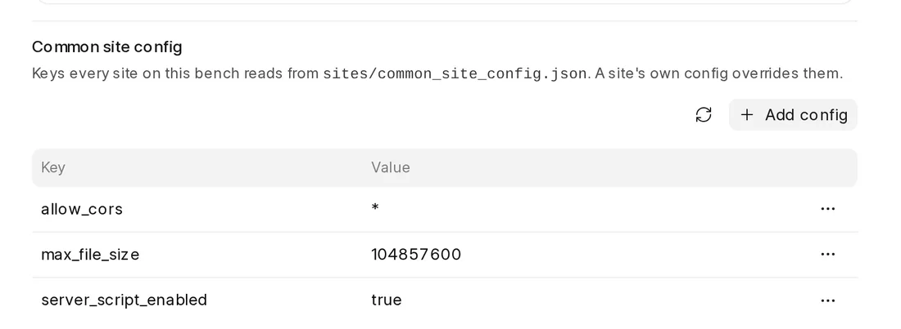
New: Settings > Bench > Common site config. Same table, buttons and dialogs as the site Config tab. 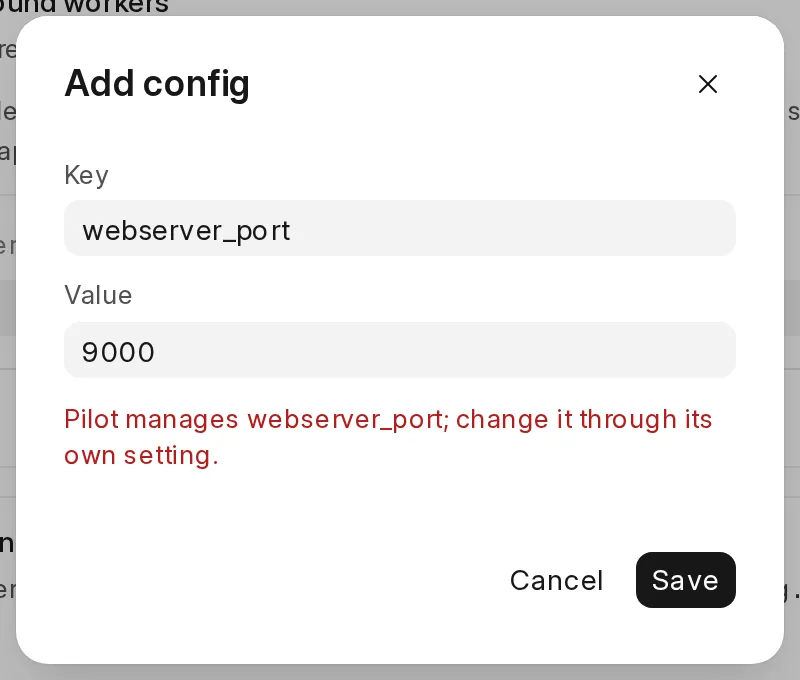
A key that Pilot manages is refused, with the reason in the dialog. 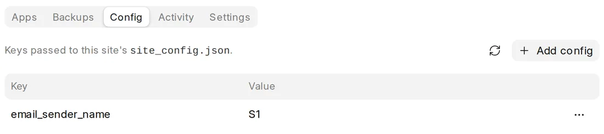
The site Config tab now uses the same shared editor. It looks the same as before.
#591 Configurable Nginx ports
Done, committed- Root cause
- NginxConfig had http_port and https_port, but no config file fed them. A [nginx] table in bench.toml was ignored without a warning, so nginx always listened on 80 and 443.
- Change
- One nginx serves every bench on a host, so the ports are a host setting: [nginx] http_port and https_port in common_config.toml (defaults 80 and 443). Pilot checks the values and stops with a clear error when a value is bad. A [nginx] table in bench.toml is now an error that names common_config.toml. The admin readiness check reads the port from the same file. Two copies of the port-suffix code now use one helper, login.origin().
- Tests
- New tests: ports round trip, defaults are not written, bad ports fail, [nginx] in bench.toml fails. The admin readiness tests now set the port in common_config.toml. Full suite: 4059 passed.
- Branch
- feat/nginx-ports (local only)
#670 Update failed button blocks access to updates
Done, committed- Root cause
- A failed update stays unresolved until someone runs Retry or Restore. When neither can work, for example because the app or the site was removed after the failure, Restore fails again and goes back to 'Restore failed'. Every new update is refused while an operation is unresolved, so the bench was stuck.
- Change
- 1. New Dismiss action, for 'Needs attention' and 'Restore failed': sites leave maintenance, the recovery snapshots are deleted, the decision is recorded, and the operation becomes 'Dismissed'. It stays in the history and no longer blocks updates. Dismiss does not change app code or site data. 2. Restore now skips an app that was removed from the bench and a site that was dropped. It used to fail on them every time. 3. The recovery actions moved from operation.py to a new migration/recovery.py. 4. UI: a Dismiss button and a confirm dialog; the 'Reverted' tab is now 'Closed' (reverted and dismissed); the chain labels say 'Restore' to match the button. The help text mentions Restore only when Restore is possible.
- Bug found on the way
- After a dismiss, the 'Skipped patches' card listed the dismiss decision as a patch ('on' with no name). It now lists only skipped patches.
- Tests
- New tests: dismiss from both failure states, dismiss refused while running, a dropped site is skipped by dismiss and by restore, a removed app is skipped by restore, the API route (202, and 409 while running), and the dismiss task. Frontend: skippedPatches. 209 migration/task/API tests and 82 frontend tests pass.
- Test server
- Started a real site migrate and force-stopped its task (twice). Both times the operation went to 'Needs attention' and the site stayed in maintenance. Dismiss in the UI moved it to 'Dismissed', and site_config.json went back to maintenance_mode 0 and pause_scheduler 0. In the second run the task was killed after the migrate finished, while services restarted. Pilot paused it with no failed site, so Retry would only finish the operation. That is the intended behaviour.
- Branch
- feat/migration-dismiss (local only, on top of fix/database-settings-ui)
- Screens
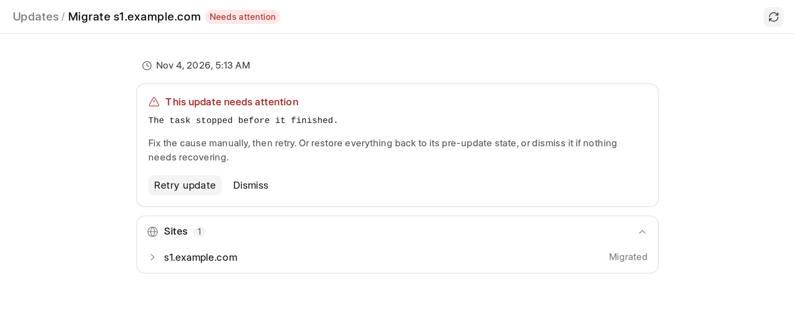
A force-stopped migrate: Retry and the new Dismiss button. No Restore here, because an in-place migrate keeps no backup. 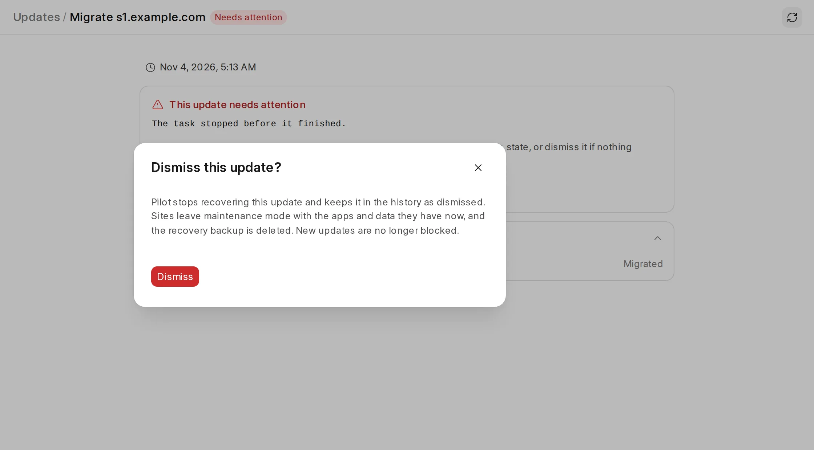
Dismiss asks first and says what happens to the sites and the backup. 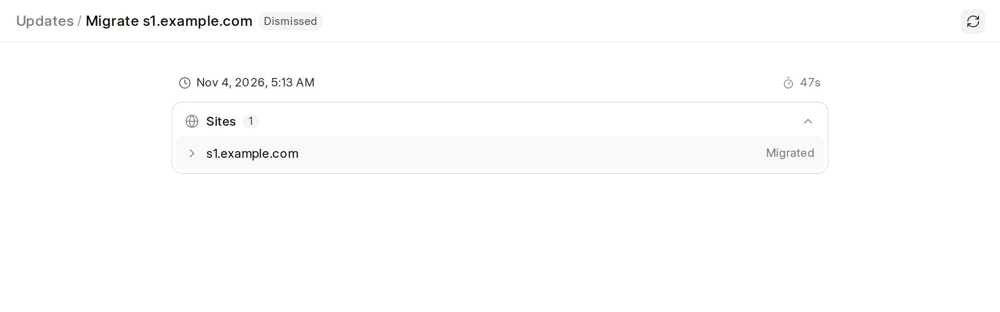
After dismiss: 'Dismissed' badge, no action card. 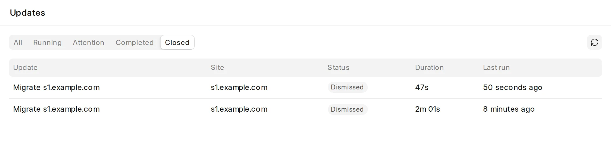
The 'Closed' tab holds reverted and dismissed updates.
#386 Custom domain and TLS status from the certificate on disk
Done, committed- Scope
- On your note, there are no WHOIS, RDAP, DNS or HTTP checks. Pilot never connects to a domain, so a Sleepy VM stays asleep. All state comes from the certificate files and certbot's results.
- Root cause
- A failed issue or renewal was only printed in the task log. The domain list showed a plain lock, so a broken domain looked the same as one waiting for a certificate.
- Change
- bench.certificates keeps one record per certificate in logs/certificates.json: the names asked for, the names the file covers, the expiry, and certbot's last error. Each obtain records its result, and the daily certificate timer reads each file again. Certbot now writes its output to the task log, and a failure keeps certbot's reason (Domain, Type, Detail) instead of a generic footer.
- Domain status
- valid, pending, failed, expiring (under 14 days, so renewal is not working) or expired. The last three mean the domain is broken. A new domain that fails does not mark the names the current file still covers as broken. A renewal failure inside the 30-day window marks every name as failed.
- Alerts
- A certificate that breaks raises one certificate_failed or certificate_expiry alert to the feed, mail and webhooks. Pilot alerts again only after the certificate was valid and then broke again.
- Test server
- Port 80 was blocked for one minute and a new domain was added. Certbot failed, the domain showed 'Certificate failed' with certbot's reason, and one signed certificate_failed webhook arrived. A second failed run did not alert again. With port 80 open, the timer added the domain to the certificate, both domains showed valid, and the alert was reset.
- Tests
- New tests: each state, a failed new domain does not break covered names, a new domain waits, a success clears the failure, alert once until valid again, issue failure recorded and alerted, the domain row status, certbot's reason kept, and the UI badge and tooltip. Tests never shell out to sudo for certificate files.
- Branch
- feat/tls-status (on top of feat/default-alerts)
- Screens
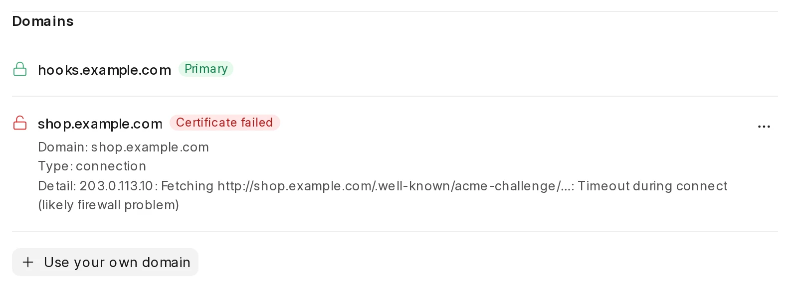
Site > Settings > Domains: the new domain failed (certbot's reason below). The site domain still has a valid certificate. 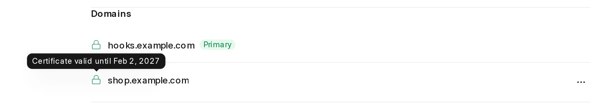
After the fix: both domains valid, with the expiry date in the tooltip.
#726 Send all notifications to webhooks, with an event filter per endpoint
Done, committed- Root cause
- A webhook got only resource and uptime alerts, in one alert-shaped body. The token was required, and an endpoint could not choose events. Failed tasks, finished updates and failing backups went only to the bench feed.
- Change
- Each endpoint is a [[resource_limits.webhook_endpoints]] entry with url, an optional token, and events. No events means every event, also events added later. Every endpoint gets the same fixed JSON body, like a GitHub webhook: event, delivery ID, sent_at, bench, title, message, severity, category, site, a link to the dashboard, and context. There is no body template. Headers: X-Pilot-Event, X-Pilot-Delivery, and with a token, Authorization: Bearer and X-Pilot-Signature-256 (HMAC-SHA256 of the body). The older {url = token} table still reads.
- Events
- task_failed, task_succeeded (an update, restore, new or reinstalled site, or a Pilot update finished), backups_failing, resource_limit_breached, site_down, and ping from the Test button. Info events such as task_succeeded go to webhooks only, not to mail or Central.
- UI
- Settings > Notifications: the token is optional, a picker selects events (empty shows 'All events'), and a Test button sends a ping and shows the receiver's status code, or the network error.
- Tests
- New tests: the signed request and its headers, no auth without a token, the event filter, Info skips mail and Central, a non-2xx answer is not counted as delivered, the fixed body, ping ignores the filter, the TOML round trip and the older table, the settings patcher (events, optional token, token kept after a URL edit, unknown event, repeated URL), the Test endpoint, and task events. 2389 tests in admin, core and config pass.
- Test server
- A small receiver checked each signature. The Test button got 202 back, a /missing path showed 404 with its body, and a closed port showed 'connection refused'. A new site that succeeded and one that failed sent task_succeeded and task_failed to both endpoints. The signature matched on the endpoint with a token, and the site name was in the body.
- Also fixed
- An S3 test failed in the full suite only, because a real BotoCoreError ignores its message once boto loads. The test now raises the real SSLError (fixup in the #753 commit). A run_command test fails only on this machine: pgrep matches 'sleep 5' in the agent's own wrapper process.
- Branch
- feat/webhook-events (on top of feat/migration-backups-s3)
- Screens

Settings > Notifications: optional token, events per endpoint, and the Test button result. 
The event picker. No choice means all events.
#600 Recover a failed migration with corrected code
Done, committed- Root cause
- An update pins each app to the commit chosen at the start. When a migrate fails because of a bug in that commit, Retry runs the same commit again and fails again. The fix pushed to the branch could only reach the bench by SSH and git.
- Change
- New action 'Update code & retry', offered only when an app update failed in the migrate phase. 1. GET /migrations/<id>/code-updates fetches each app's branch (or marketplace release) and lists the installed commit and the newer one. 2. The user ticks the apps and confirms. Pilot accepts only the commit offered at that moment (409 code_moved if the branch moved on). 3. UpdateCodeTask moves the operation to a new state 'updating_code', checks out the commits, reinstalls dependencies, rebuilds assets, sets the failed site back to pending, and continues the normal migrate chain. Sites that already migrated are not migrated again.
- Safety
- The pins from the start stay as they are, so Restore still goes back to the commits from before the update. Each move is recorded in decisions (app, from_sha, to_sha) and in the audit log, and shows in a 'Code updates' card. A failed checkout, install or build, or a stopped task, goes back to 'Needs attention' before any site migrates, so the user can update again, retry, restore or dismiss. The task uses the same bench and site locks as the rest of the operation.
- Interruption
- The stopped-task handling moved to migration/recovery.py and now covers 'updating_code'. Checked live in #670: a force-stopped migrate pauses safely, and a task killed after its step finished pauses with no failed site.
- Tests
- New tests: offered commits per app, the action is offered only after a failed migrate of an update, success resumes the failed site, already-migrated sites are not migrated again, bad or stale commits are refused, a failed code update pauses before any migrate, a stopped code update can start again, the API routes (200, 202, 409, 422), the task argument parsing, and the 'Update code' log entry. 228 migration/task/API tests and 83 frontend tests pass.
- Test server
- Made a small test app with a git remote on the server. v2 added a patch that raises. The update failed in the migrate phase, on that patch. Then v3 fixed the patch and was pushed. The dialog offered f86f2c2 → 05eb246. After confirm, the operation completed in about 1 minute. The app is at 05eb246, the patch is in Patch Log, the site left maintenance, the original pin (f86f2c2) is kept, and the audit log has the update_code entry. Repeated recovery also works: v4 broke a second patch and the update failed. v5 was still broken, so 'Update code & retry' paused again with the new error. v6 fixed it, and the second code update completed. The history shows 757e580 → 2f16d5d → f551436, and the failed site migrated three times, once per code version.
- Branch
- feat/migration-update-code (local only, on top of feat/migration-dismiss)
- Screens
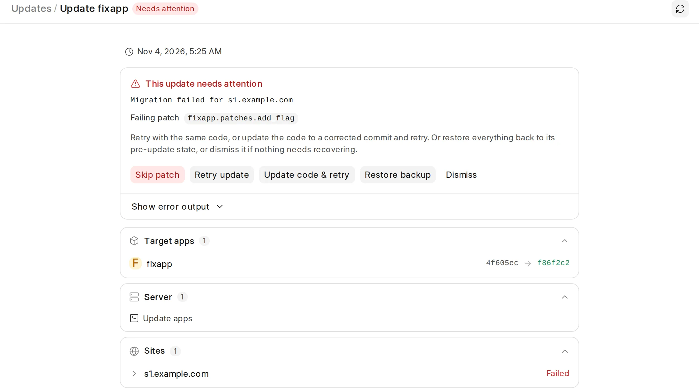
A migrate failed on a broken patch. 'Update code & retry' sits next to Retry, Restore and Dismiss. 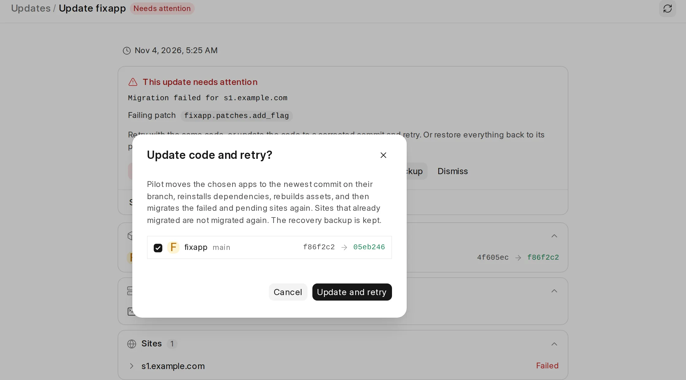
The dialog fetches the branch and shows the installed and the newer commit for each app. 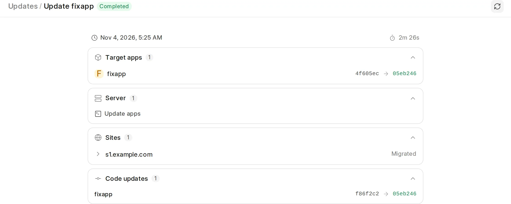
After the fix: Completed. Target apps shows the commit installed now; 'Code updates' keeps the history.
#753 Keep the pre-update backup in the S3 bucket
Done, committed- Root cause
- Before an update migrates a site, Pilot dumps every MariaDB table to sites/<site>/.migrate. The disk must hold a copy of each database for the whole update, so hosts need 30 to 40% extra space (the first brief line, and issue #753).
- Change
- When the bench has an S3 bucket and the new [s3] migration_backups setting is on (the default), each table dump streams gzip-compressed from mariadb-dump into the bucket at sites/<site>/migration_backups/<operation>/. Nothing is written to disk on the way. Only the table list, the config copy and offsite.json (bucket and prefix) stay local. The disk check before an update counts only sites that back up locally. Restore checks that every object exists, then downloads, imports and deletes one dump at a time. Discard and Dismiss delete the objects. Settings > Object storage has a 'Store update backups here' switch to turn it off. SQLite and PostgreSQL backups stay local.
- Bugs found on the way
- 1. With a custom endpoint, boto sent requests to <bucket>.<endpoint>, which failed TLS against the provider's wildcard certificate. A custom endpoint now uses path-style requests. 2. Settings answered that failure with a generic 500. It now shows the reason. 3. The Region select dropped a region that is not in the provider list ('bom'), so saving the form would have broken a working bucket. The saved region now stays.
- Safety
- A dump that fails part way deletes its object, so a truncated dump is never used. A restore that is missing any object stops before it imports anything.
- Tests
- New tests: GzipReader output in any read size, only MariaDB dumps go to the bucket and only when on, dumps stream to the bucket and stay off the disk, a failed dump leaves no object, restore downloads and deletes each copy, a missing object stops restore before any import, discard deletes only this backup's objects, the disk check skips S3 sites, the settings switch round trip, path-style on a custom endpoint, and a clear TLS error. 848 tests in the related suites pass.
- Test server
- With the test bucket configured, an update with a broken patch ran. The backup put 30 table dumps (34 KB) in the bucket, and the local .migrate held only 20 KB of metadata. The migrate failed on the broken patch. Restore pulled the dumps from S3: the site is 'recovered', the app is back on its old commit, and the operation is 'reverted'. Afterwards the bucket prefix and the local directory were both empty.
- Branch
- feat/migration-backups-s3 (local only, on top of feat/migration-update-code)
- Screens
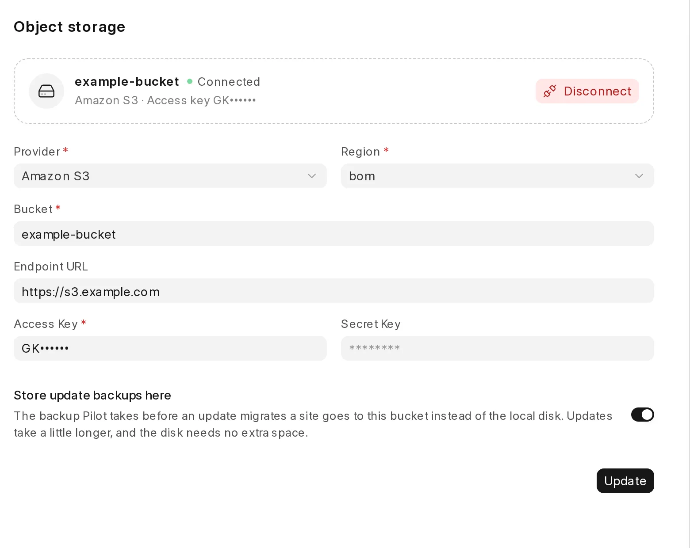
Settings > Object storage: the new switch. The custom region 'bom' now stays selected.
#748 Validate alerting: alerts on by default, and each alert checked end to end
Done, committed- Default alerts
- CPU, memory and disk alerts were off on every host. They now start at 90%, and site uptime stays on. The enable_default_alerts patch turns them on once on an older host that had all three off. On the test server the patch changed 0/0/0 to 90/90/90. A host that set any limit keeps its values.
- Central bug
- Central's report_pilot_event refuses an event type that is not one of its Server types. Pilot sent site_down, but Central calls it site_unavailable, so a managed host's team never got site-down alerts. Pilot now sends Central's names: site_down → site_unavailable, backups_failing → backup_failure, a failed update → migration_failure, and resource_limit_breached as it is. Central has no certificate type, so certificate_expiry goes to mail and webhooks only. Checked against Central's develop fixtures; not sent to a real Central.
- Less noise
- Mail and Central get only alerts. Each failed backup attempt was going to be a task mail (6 a day). Now an inbox gets one 'Backups of <site> are failing' mail, and every task event still goes to webhooks and the feed.
- Better bodies
- Resource, site-down and certificate alerts now carry a title, category, severity, site and dashboard link. The mail subject uses the title, so it names the site.
- Live test
- On the test server: an SMTP sink with a real TLS certificate (STARTTLS checked) and a webhook receiver that checks the signature. Limits set to 1-5%, web workers stopped, and a site's DB password broken. Mail and webhook both got: Resource limit breached (after 5 minutes), '2 sites are unreachable', and 'Backups of <site> are failing' (once, at the 6th failure). The feed got each one. Then the server was restored.
- Found, not changed
- The uptime ping (/api/method/ping) does not use the database, so a site with a broken DB still counts as up.
- Tests
- New tests: the patch (all off, any set, runs once, no common config), the Central name for each event, a failed task skips mail and Central, a certificate alert is mailed but not sent to Central, the site-down title for one or more sites, and the payload fields.
- Branch
- feat/default-alerts (on top of feat/webhook-events)
- Screens

Settings > Notifications on a host after the patch: every alert on, at 90%.
PRs merged on 3 November
Each diff was read. The full test suite on develop passed (4053 tests). Items with a live check ran on a fresh Ubuntu 26.04 test server that was installed from develop.
| Item | Result | Evidence |
|---|---|---|
| #769 build swap helper on a normal install | ok | pilot-build-swap is in /usr/local/bin and its sudoers file exists after a fresh install. |
| #765 opt-in daily Pilot updates | ok | auto-update on adds the 03:37 cron line; off removes it; status reports each state. |
| #764 refuse a migration the disk cannot back up | ok | Merged into develop with #763 under it. Unit and API tests pass. |
| #763 refuse a backup the disk cannot hold | ok | Unit tests pass. A real backup with files, started from the Admin API, passed the space check and succeeded. |
| #762 run git with the stored credential | ok | pilot -b main git frappe log -1 works; an unknown app exits 1 with a clear message. |
| #761 admin domain out of search engines | ok | Admin /robots.txt disallows everything and sends X-Robots-Tag: noindex, nofollow. The site domain has no such header. |
| #760 wait for the certbot lock | ok | Unit tests pass. A real certificate was issued during setup production --tls. |
| #759 2FA QR quiet zone | ok | Diff checked: fixed white quiet zone inside the SVG. |
| #757 cloud settings install progress | ok | Diff checked. The site task API adds steps and progress. Needs Central for a live check. |
| #739 install a chosen release | ok | The release API URL for an older tag resolves to its pilot.tar.gz. A missing --version value exits non-zero, the same as --user. |
| #738 say why setup letsencrypt did nothing | ok | The message names flags that exist on setup production. |
| #737 more AWS regions | ok | The frontend has no second region list; the backend list is the only one. |
| #735 Chromium PDF libraries | ok | On Ubuntu 26.04, Frappe downloaded headless Chromium and returned a valid PDF from get_chrome_pdf. |
Settings > Database check
All actions were run through the UI on the test server.
| Item | Result | Evidence |
|---|---|---|
| Cards: memory, buffer pool, max connections | ok | Values match the host (7.8 GB RAM, 50 % share, 1.5 GB buffer pool). |
| Max connections edit to 60 | ok | Ran as a task and succeeded. MariaDB then reported @@max_connections = 60. |
| Memory split dialog, binary logs dialog | ok | Both open with the current values. |
| Variable list and editor | ok | Tabs, search, Recommended and Allowed ranges show correctly. |
| Buffer pool input clipped, header cut off, 2^64 shown as TB | fixed | See the first card on this page. |
| Focus ring on 'Bench' when the page opens from its URL | note | The dialog focuses its first button. It shows only without a click. Not changed. |
- Screens

Settings > Database on the test server. 
Variable editor for innodb_buffer_pool_size.
Log
- Done All items are committed as a local branch stack. Nothing is pushed.
- #386 Committed on feat/tls-status. A real certbot failure and its recovery were checked on the server.
- #386 scope On your note: no WHOIS, DNS or HTTP checks, so a Sleepy VM is never woken. TLS status comes from the certificate files and renewal results; a domain shows broken when TLS failed, expired, or failed to renew, and that raises an alert.
- #748 Committed on feat/default-alerts. Every alert arrived by mail and webhook on the server. Found and fixed: Central refused site_down.
- #726 Committed on feat/webhook-events. Test pings, a failed and a finished task reached a signed receiver on the server.
- #753 Committed on feat/migration-backups-s3, with two S3 settings fixes. Backup to and restore from the real bucket checked on the server.
- #600 Repeated recovery checked on the server: broken fix, then working fix, completed.
- #600 Committed on feat/migration-update-code. The single fix worked on the server. The repeated case (fix still broken, then fixed) is running now.
- Next #600: update the code and retry, S3 upload of migration backups, interruption cases.
- #670 Committed on feat/migration-dismiss. Checked on the test server with two real force-stopped migrates.
- #584 Committed. Screens added. The duplicate description line was removed.
- Check Read and checked the 13 PRs merged on 3 November, and Settings > Database. Results are in the tables below.
- UI Each changed screen gets a screenshot from the test server on this page.
- #584 Core, API and UI written. Tests pass. Screenshots come after the test server deploy.
- #591 Committed on feat/nginx-ports.
- Scope The first brief line is part of #670 and #600. It is not a separate item.
- Start Page created. Reading issues and code.